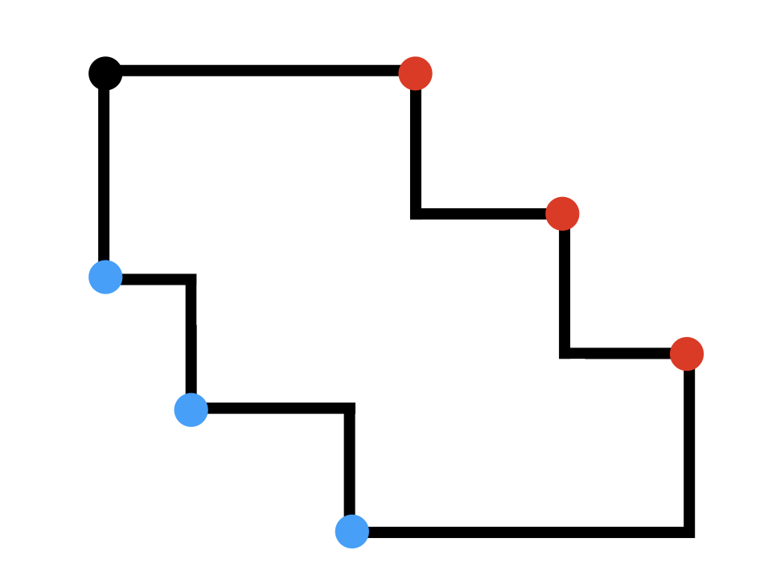
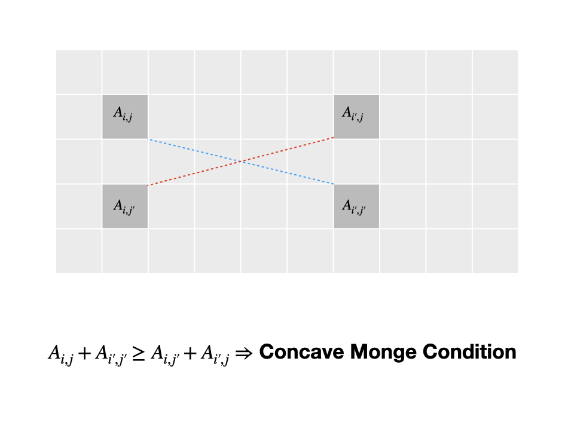
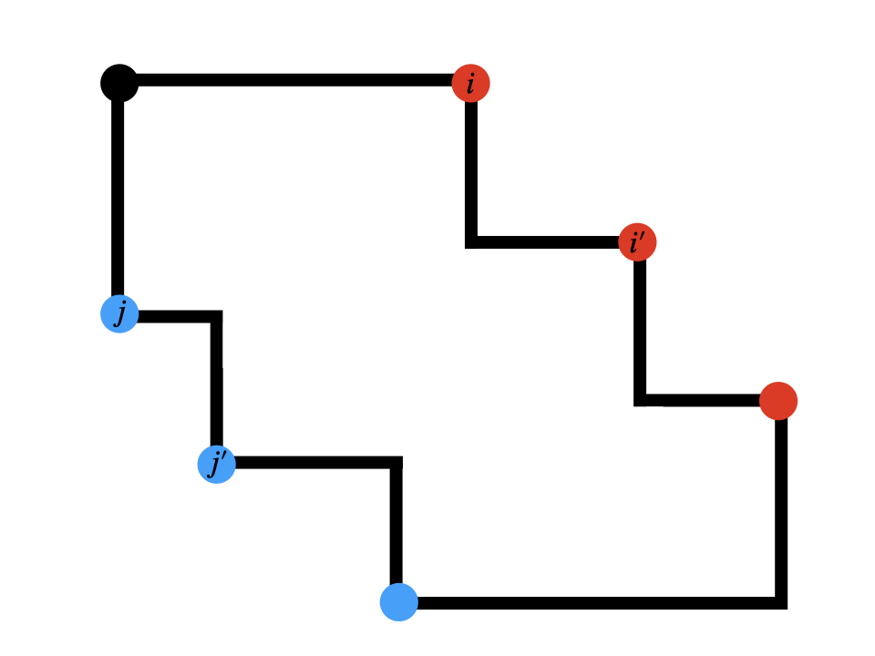
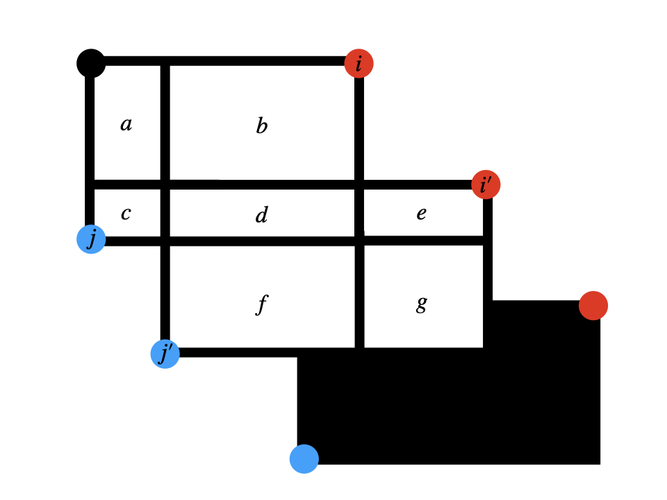

用了 Deque 的四邊形優化做法加了輸入輸出優化就莫名其妙拿下了 Ow0;) 東東抱歉>////<
參考資料：
- Sean Liu’s Post on 2qbx’s blog
- ToMmyDong 在 IOICamp2021 的講義
重點提示，請不要帶著 DP 的想法看這篇，這裡跟 DP 一點關係都沒有。
題序
自己看。
思路
我們先把所有右上角的 $n$ 個點叫做紅點，左下的 $m$ 個點叫做藍點，圖就變成這樣了：

注意到有些角根本不重要，所以沒有點點。
我們要想做的事情是，找出每一個可能是答案的「紅點—藍點」點對，逐一計算並取其最大值做為答案。暴力的作法可能長這樣：
|
|
複雜度是 $O(n^2)$。過不了耶 Ow0;)
四邊形優化
還記得我們的目標嗎？「找出每一個可能是答案的『紅點—藍點』點對並逐一計算」，關鍵在於「找出每一個可能是答案的點對」。確切要怎麼做呢？
我們先想像有一個表格，橫軸對應到紅點，縱軸對應到藍點，大概會長這樣：
| 點對 | red[1] | red[2] | … |
|---|---|---|---|
| blu[1] | area(1, 1) | area(2, 1) | … |
| blu[2] | area(1, 2) | area(2, 2) | … |
| … | … | … | … |
接著，我們會想要略過不算一些不可能是答案的位置。但是，又有哪些位置是不必要的呢？
想法一：Monge Condition (TomMyDong 的想法)
什麼是 Monge Condition？
先不要管那長得像某海綿的名字，我們來看看他想說什麼？
當一個矩陣 $A_{n, m}$ 滿足：
$$ A_{i, j} + A_{i’, j’} \geq A_{i, j’} + A_{i’, j} \ \forall 0 \leq i < i’ < n, 0 \leq j < j’ < m$$
則他符合 Concave Monge Condition。
看起來很複雜呢！但先別著急，我們把圖畫出來：

就是這樣！移項一下我們可以得到：
$$ A_{i, j} \leq A_{i’, j} \Rightarrow A_{i, j’} \leq A_{i’, j’}$$
似乎是個漂亮的性質呢。
怎麼用？
讓我們回到我們的假想表格，想辦法把 Monge Condition 翻譯成畫框上的事情。

有沒有好理解一點了？
若能證明他符合 Concave Monge Condition 的話，我們就有一個漂亮的性質可以使用了：
如果紅點 $i$ 對到藍點 $j$ 不比紅點 $i'$ 對到藍點 $j$ 好， 那接下來的 $j'$ 們都不可能對到 $i$，因為對到 $i'$ 一定不會比較差！
那要怎麼證明 Concave Monge Condition 呢？其實超直觀的！我們先關注上面兩塊（類？）矩形就好：

$$ A_{i, j} + A_{i’, j’} \ = (a + b + c + d) + (d + e + f + g) \ \geq (b + d + f) + (c + d + e) \ = A_{i, j’} + A_{i’, j} $$
到此就證完了！ $\square$
想法二：硬證四邊形（ZCK 教的）
待補。
實作呢？
我們先照順序枚舉紅點，讓他們每個人防守一個藍點的區間：
- 如果還沒有人防守，那就全部是我的！
- 如果前面有人守了一個區間，但是他在區間的最左邊（最小 $j$ ）就已經比我差了，那他接下來也不可能比我好（上面的漂亮性質），當掉！
- 不然就二分搜我哪裡開始會比他好，搶過來！
然後再枚舉一次藍點，算算他們跟守備他們的人形成的矩形面積，最後取最大值！
扣的待補。我得把他弄的漂亮一點。
李超揍他（2021/06/26 補）
既然證出了優超性，符合李超線段樹的使用時機，何不就揍他？
|
|